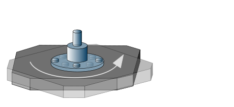

Optimization
Mode: Set the mode for optimizing the NC program.
Off: The NC program is not optimized.
Solution optimizer options
When the Use NC Optimizer option is selected, the calculated NC program is divided between the axes that exist in the machine. This way, collision situations and axis limitations are automatically taken into account so that a checked toolpath is generated on the machine.
Note
The NC Optimizer function is available with an appropriate license for the VIRTUAL Machining Optimizer. Please contact your OPEN MIND partner.
OPEN MIND strongly recommends that you use the NC Optimizer for:
-
5-axis machining with rotary axes that do not rotate endlessly
OPEN MIND recommends that you use the NC Optimizer for:
-
5-axis simultaneous applications
-
Machines that cannot move over the table center
-
Machines with an asymmetrical traversing range of the primary rotary axes (for example, from -7° to 180° or from -120° to 30°)
-
Machines in the production environment (small-scale/large-scale production)
-
Components that largely fill the available workspace and therefore restrict the traversing range of the axes
Local NC Optimizer settings
For the Interpolation, Rewind, Pole and Relink areas, specify whether the VIRTUAL Machining global settings (option: Use global definition:) or the local settings of the job (option: Use local definition) should be used to create the NC file.
Interpolation
Max. rotation angle G1: Specify the maximum permissible rotation angle of the machine axes for G1 movements.
Max. rotation angle G0: Specify the maximum permissible rotation angle of the machine axes for G0 movements.
Rewind
Allow split at G0 (for 3D Jobs): If the linking movements within a job cannot be implemented without a collision for 3D operations, the NC Optimizer changes the movements with the help of a rotary axis. Requirement: RTCP is activated.
|
Example |
BC kinematics: 3D Free Path Milling, collision avoidance by rotating the C axis by 180 degrees. (1) Collision: C axis not rotated, (2) No collision: C axis rotated. |
|
|
||
Allow split G1 movements: Enable for machines with head kinematics and limited axis.
|
Example |
AC kinematics: 5X Z Level Finishing, a rewind around the C axis takes place after each Z-level infeed. |
|
|
||
As the tool moves away from the part in a local rewind movement and then approaches the part again after the rewind movement in order to continue the machining, this movement is implemented with an overlap.
The overlap can be controlled with the following parameters:
Blending distance factor: Defines the value of the lateral pushing away from the component as a factor of the machine tolerance.
Blending length factor: Defines the blending length as a factor of the tool diameter.
Pole
Solution inc. angle: Define the angle increment as part of the solution search for machining operations at the pole. Default = 90 degrees.
|  |
Relink
The original infeed movements within jobs are removed and connected again as specified by the NC Optimizer. The optimized infeed movements are collision-free and are executed as linear movements on the shortest possible path.
Collision avoidance during rewind - Virtual Machine configuration
Initial situation: Collision avoidance for component, fixture, stock model, machine table against machine housing/frame during rewind movements.
By activating the options Check machine body and Rewind save axis in the Virtual Machine configuration, collisions during rewind movements are avoided. This is done by an additional movement in the linear axis within the rewind movement.
The axis in which the additional movement of the linear axis is to take place is to be selected as the Rewind safe axis.
It is advisable to activate the functionality for machining oversized components on machines with at least one linear axis and rotary axis in the machine table. This is also recommended for machines in which the machine table can collide with the machine housing/frame when moving the rotary axis.
In order to carry out this optimization safely, it is necessary that the component is clamped on the real machine identically to how it was collision-checked in the virtual machine.